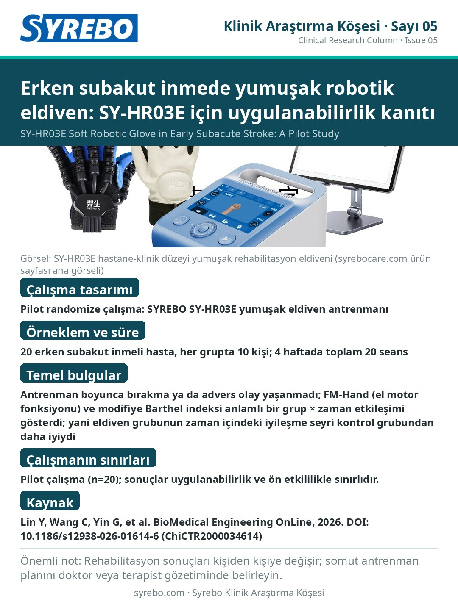

Sayı 05 · Poster sürümü
Erken subakut inmede yumuşak robotik eldiven: SY-HR03E için uygulanabilirlik kanıtı

Kaynak: Lin Y, Wang C, Yin G, et al. Feasibility and preliminary efficacy of a soft robotic glove for hand rehabilitation in early subacute stroke: a pilot investigation. BioMedical Engineering OnLine, 2026. DOI: 10.1186/s12938-026-01614-6 (Clinical Trial Registry: ChiCTR2000034614).
Çalışmanın sınırları: Pilot çalışma (n=20); sonuçlar uygulanabilirlik ve ön etkililikle sınırlıdır.
Not: Rehabilitasyon sonuçları kişiden kişiye değişir; lütfen doktorunuzun veya terapistinizin belirlediği antrenman planını uygulayın.
Çince tam metni okuyunRead in English